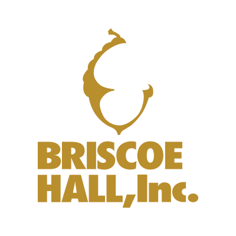

David M. Gonzales
Freelance Graphic Designer and Developer
San Antonio, Texas

Work Experience
esd and associatesSan Antonio, TX • 2006-2017 • Position: Art Director
|
|
|---|---|
MarketBuilders, Inc.Kerrville, TX • 2003-2006 • Position: Art Director
|
|
|  | Briscoe Hall, Inc.Kerrville, TX • 1998-2003 • Position: Production Manager
|
Education
Austin Coding Academy - currently enrolled
Remote classes
01/2018
San Antonio Community College
San Antonio, TX
1996-1999 - Graphics Arts Program
Art Institute of Houston
Houston, TX
Graduate - 09/90
Degree: Associates of Applied Visual Communications
Strength & Skills
Illustration: painting, drawing, pen & ink, Graphic Design, Newspaper/Magazine/Page Layout, Print Production, Director of Photography, Video Production, Post Video Editing, Animation, Email Marketing/Eblast design, PowerPoint Presentations, Art Direction/Management, Excellent Time Management Skills Understanding of HTML, CSS, and Java script
Software Experience
Adobe Creative Cloud Full Design Suite including: Photoshop, Illustrator, InDesign, Adobe Acrobat Professional, Premiere Pro, After Effects, Audition, Bridge, Apple Keynote, Pages, and Numbers, Microsoft Word, Excel, and PowerPoint, StreamLine 4.0, Freehand 7.0, Mail Chimp, Final Cut Pro